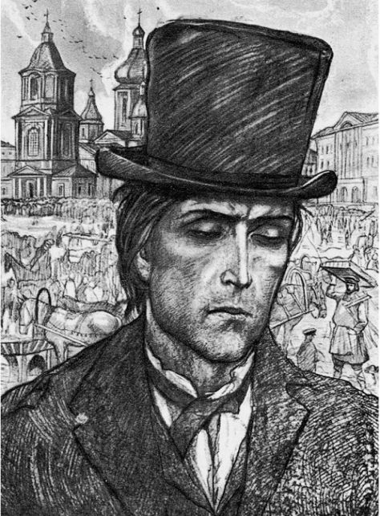
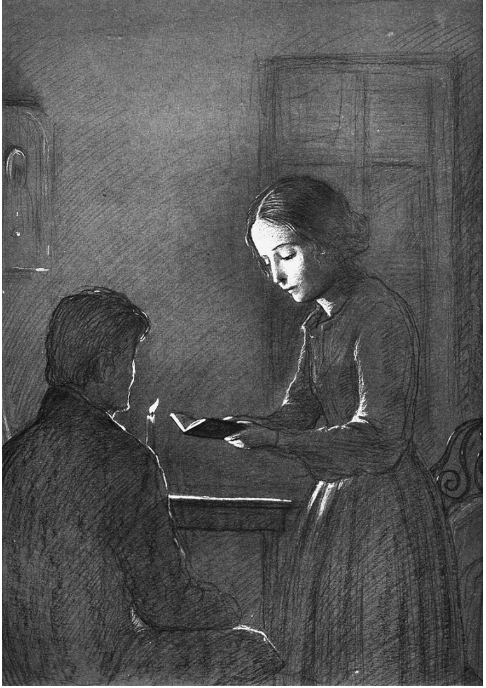

artist Ilya Glazunov (1982)

artist Ilya Glazunov (1982)
artist Ilya Glazunov (1982)
after he tries to bring her to despair
and convince her that she is like him
(part 4, chapter 4)
artist Glazunov (1960s)
| Illustration | Description |
|---|---|
|
|
Rodion Raskolnikov in his room.
artist Ilya Glazunov (1982) |
|
|
Courtyard of a house where Raskolnikov lives.
artist Ilya Glazunov (1982) |
|  |
Raskolnikov at the Haymarket Square
artist Ilya Glazunov (1982) |
|  |
Sonia reads the Gospel to Raskolnikov
after he tries to bring her to despair and convince her that she is like him (part 4, chapter 4) artist Glazunov (1960s) |